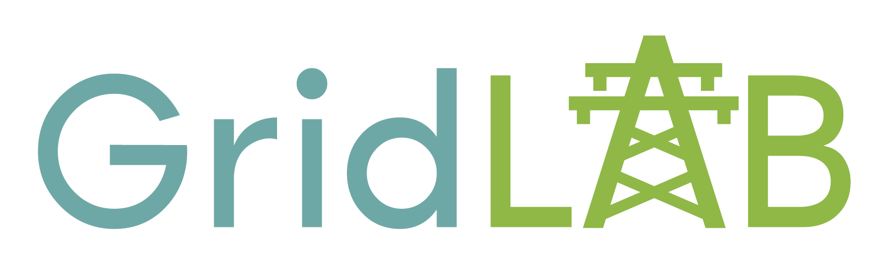
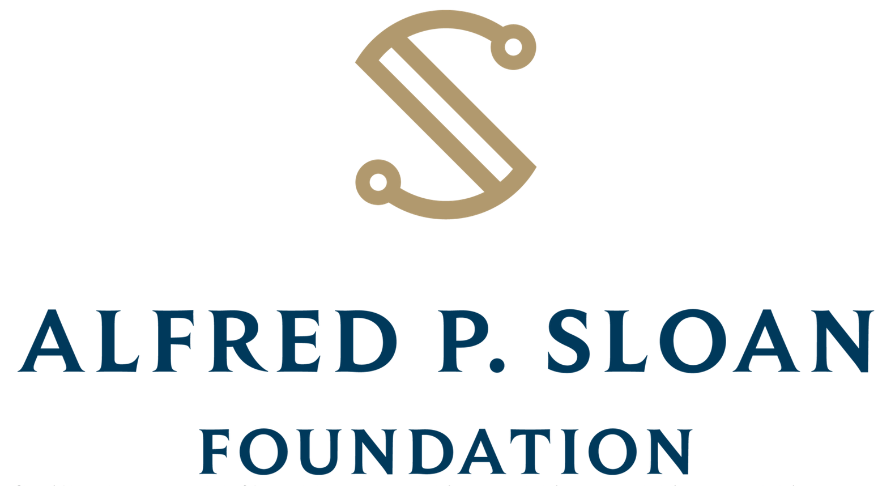

The Public Utility Data Liberation Project#
PUDL (pronounced puddle) is a data processing pipeline created by Catalyst Cooperative that cleans, integrates, and standardizes some of the most widely used public energy datasets in the US. The data serve researchers, activists, journalists, and policy makers that might not have the technical expertise to access it in its raw form, the time to clean and prepare the data for bulk analysis, or the means to purchase it from existing commercial providers.
For more information on how to use PUDL data, see Data Access.
Available Data#
We focus primarily on poorly curated data published by the US government in semi-structured but machine readable formats. For details on exactly what data is available from these data sources and what state it is in, see the individual pages for each source:
Population Estimates Program's (PEP) Federal Information Processing Series (FIPS) Codes
EIA Form 176 – Annual Report of Natural and Supplemental Gas Supply and Disposition
EIA Form 930 – Hourly and Daily Balancing Authority Operations Report
FERC Form 714 – Annual Electric Balancing Authority Area and Planning Area Report
Pipelines and Hazardous Materials Safety Administration (PHMSA) Annual Natural Gas Report
USDA RUS Form 12 – Financial and Operating Report: Electric Power Supply
USDA RUS Form 7 – Financial and Operating Report: Electric Distribution
Vibrant Clean Energy Resource Adequacy Renewable Energy (RARE) Power Dataset
PUDL’s processed versions of these data sources are distributed primarily as Parquet files. To get started using PUDL data, visit our Data Access page, or continue reading to learn more about the PUDL data processing pipeline.
We also publish SQLite databases containing relatively pristine versions of our more difficult to parse inputs, especially the old Visual FoxPro (DBF, pre-2021) and new XBRL data (2021+) published by FERC:
Raw Data Archives#
PUDL depends on “raw” data inputs from sources that are known to occasionally update their data or alter the published format. These changes may be incompatible with the way the data are read and interpreted by PUDL, so, to ensure the integrity of our data processing, we periodically create archives of the raw inputs on Zenodo. Each of the data inputs may have several different versions archived, and all are assigned a unique DOI and made available through the REST API. Each release of the PUDL Python package is embedded with a set of DOIs to indicate which version of the raw inputs it is meant to process. This process helps ensure that our outputs are replicable.
To enable programmatic access to individual partitions of the data (by year, state, etc.), we archive the raw inputs as Frictionless Data Packages. The data packages contain both the raw data in their originally published format (CSVs, Excel spreadsheets, and Visual FoxPro database (DBF) files) and metadata that describes how each dataset is partitioned.
The PUDL software will download a copy of the appropriate raw inputs automatically as needed and organize them in a local datastore.
See also
The software that creates and archives the raw inputs can be found in our PUDL Archiver repository on GitHub.
The ETL Process#
PUDL’s ETL produces a data warehouse that can be used for analytics. The processing happens within Dagster assets that are persisted to storage, typically pickle, parquet or SQLite files. The raw data moves through three layers of processing.
Raw Layer#
Assets in the Raw layer read the raw data from the original heterogeneous formats into
a collection of pandas.DataFrame with uniform column names across all years so
that it can be easily processed in bulk. Data distributed as binary database files, such
as the DBF files from FERC Form 1, may be converted into a unified SQLite database
before individual dataframes are created. Raw data assets are not written to
pudl.sqlite. Instead they are persisted to pickle files and not distributed
to users.
See also
Module documentation within the pudl.extract subpackage.
Core Layer#
The Core layer contains well-modeled assets that serve as building blocks for downstream wide tables and analyses. Well-modeled means tables in the database have logical primary keys, foreign keys, datatypes and generally follow Tidy Data standards. The assets are loaded into a SQLite database or Parquet file.
These outputs can be accessed via Python, R, and many other tools. See the PUDL Data Dictionary page for a list of the normalized database tables and their contents.
Data processing in the Core layer is generally broken down into two phases. Phase one focuses on cleaning and organizing data within individual tables, while phase two focuses on the integration and deduplication of data between tables. These tasks can be tedious data wrangling toil that impose a huge amount of overhead on anyone trying to do analysis based on the publicly available data. PUDL implements common data cleaning operations in the hopes that we can all work on more interesting problems most of the time. These operations include:
Standardization of units (e.g. dollars, not thousands of dollars)
Standardization of N/A values
Standardization of freeform names and IDs
Use of controlled vocabularies for categorical values like fuel type
Use of more readable codes and column names
Imposition of well-defined, rich data types for each column
Converting local timestamps to UTC
Reshaping of data into well normalized tables which minimize data duplication
Inferring Plant IDs which link records across many years of FERC Form 1 data
Inferring linkages between FERC and EIA Plants and Utilities.
Inferring more complete associations between EIA boilers and generators
See also
The module and per-table transform functions in the pudl.transform
sub-package have more details on the specific transformations applied to each
table.
Many of the original datasets contain large amounts of duplicated data. For instance, the EIA reports the name of each power plant in every table that refers to otherwise unique plant-related data. Similarly, many attributes, like plant latitude and longitude, are reported separately every year. Often, these reported values are not self-consistent. There may be several different spellings of a plant’s name, or an incorrectly reported latitude in one year.
Assets in the Core layer attempt to eliminate this kind of inconsistent and duplicate information when normalizing the tables by choosing only the most consistently reported value for inclusion in the final database. If a value which should be static is not consistently reported, it may also be set to N/A. For details on how this works for EIA entities (plants, utilities, boilers, and generators), see Entity Resolution.
Output Layer#
Assets in the Core layer normalize the data to make storage more efficient and avoid data integrity issues, but you may want to combine information from more than one of the tables to make the data more readable and readily interpretable. For example, PUDL stores the name that EIA uses to refer to a power plant in the core_eia__entity_plants table in association with the plant’s unique numeric ID. If you are working with data from the core_eia923__fuel_receipts_costs table, which records monthly per-plant fuel deliveries, you may want to have the name of the plant alongside the fuel delivery information since it’s more recognizable than the plant ID.
Rather than requiring everyone to write their own SQL SELECT and JOIN statements
or do a bunch of pandas.merge() operations to bring together data, PUDL provides a
variety of output tables that contain all of the useful information in one place. In
some cases, like with EIA, the output tables are composed to closely resemble the raw
spreadsheet tables you’re familiar with.
The Output layer also contains tables produced by analytical routines for calculating derived values like the heat rate by generation unit, the capacity factor by generator, or hourly electricity demand with missing and outlying values imputed.
See also
The PUDL Examples repository provides examples of working with PUDL data using Python in Jupyter notebooks.
For larger tables, including those with hourly resolution, you may want to use tools designed for data that’s larger than your computer’s available memory. Polars dataframes <https://docs.pola.rs/user-guide/getting-started/> and DuckDB <https://duckdb.org/docs/> are great options.
Data Validation#
We have a growing collection of data validation test cases that we run before
publishing a data release to try and avoid publishing data with known issues. Most of
these validations are described in the pudl.validate module. They check things
like:
The heat content of various fuel types is within expected bounds.
Coal ash, moisture, mercury, sulfur, etc. content are within expected bounds
Generator heat rates and capacity factors are realistic for the type of prime mover being reported.
Some data validations are currently only specified within our test suite, including:
The expected number of records within each table
The fact that there are no entirely N/A columns
A variety of database integrity checks are also run either during the data processing or when the data is loaded into SQLite.
See our Testing PUDL documentation for more information.
Organizations using PUDL#
This is a partial list of organizations that have used PUDL in their work. If your organization uses PUDL we’d love to list you here! Please open a pull request or email us at hello@catalyst.coop!
RMI via both their Utility Transition Hub and Optimus financial modeling tool
PyPSA-USA an open source power systems model.
PUDL Sustainers#
The PUDL Sustainers provide ongoing financial support to ensure the open data keeps flowing, and the project is sustainable long term. They’re also involved in our quarterly planning process. To learn more see the PUDL Project page on Open Collective.
Gigawatt Tier (≥$25,000/year)#

Megawatt Tier (≥$16,000/year)#
Become our first Megawatt tier sustainer!
Kilowatt Tier (≥$8,000/year)#
Become our first kilowatt tier sustainer!
Major Grant Funders#
Alfred P. Sloan Foundation#

The PUDL Project has been supported by three grants from the Alfred P. Sloan Foundation’s Energy and Environment Program, in 2019, 2021, and 2024.
National Science Foundation#
The PUDL Project was awarded a grant from the National Science Foundation’s Pathways to Enable Open Source Ecosystems (POSE) program (award 2346139) in 2024.